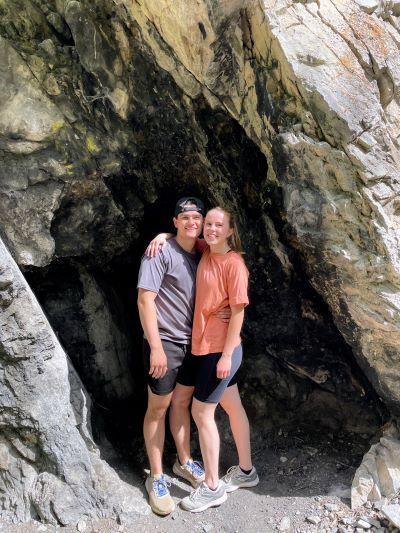

Top Attractions
-
Bridal Veil Falls
Bridal Veil Falls is a stunning 600-foot waterfall located in Provo Canyon. It offers scenic beauty and various hiking trails.
-
Provo City Center Temple
The Provo City Center Temple is a magnificent structure that was originally built as a tabernacle in 1883 and later converted into a temple. It is a prominent landmark in downtown Provo.
-
Provo Canyon
Provo Canyon offers breathtaking views, hiking trails, fishing spots, and opportunities for outdoor activities such as camping and picnicking.
Exploring Provo
Tableau Graph